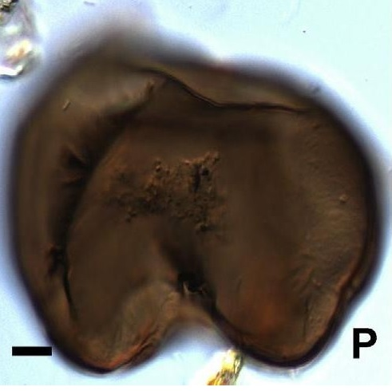
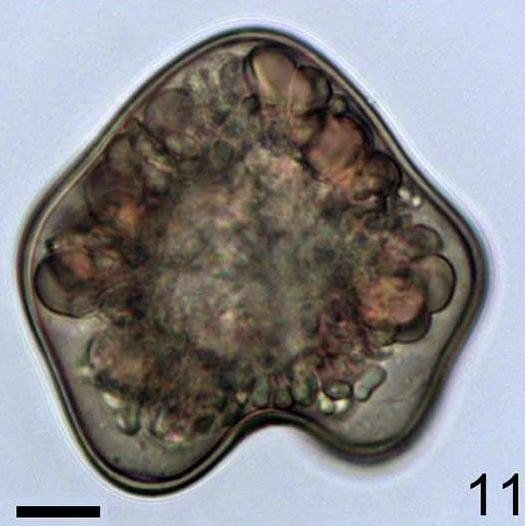
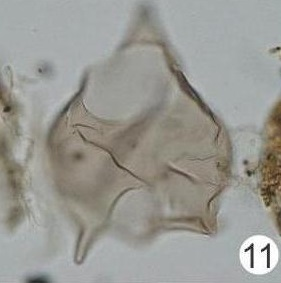
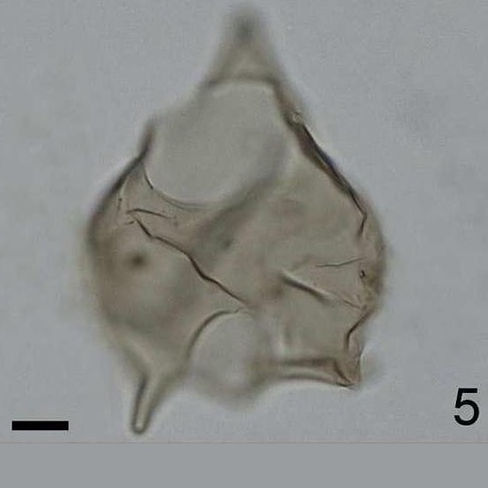
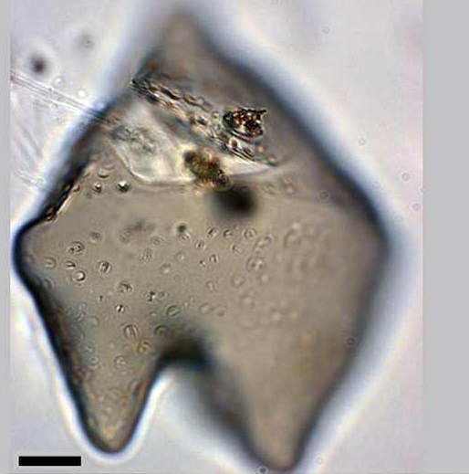
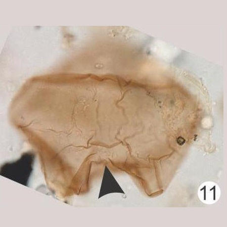
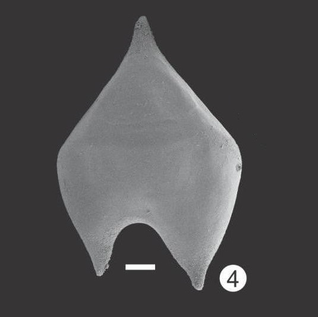
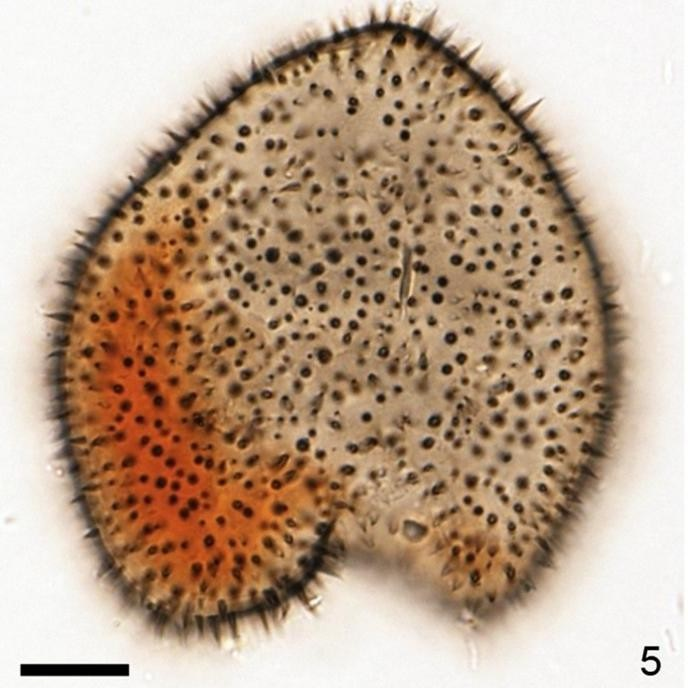
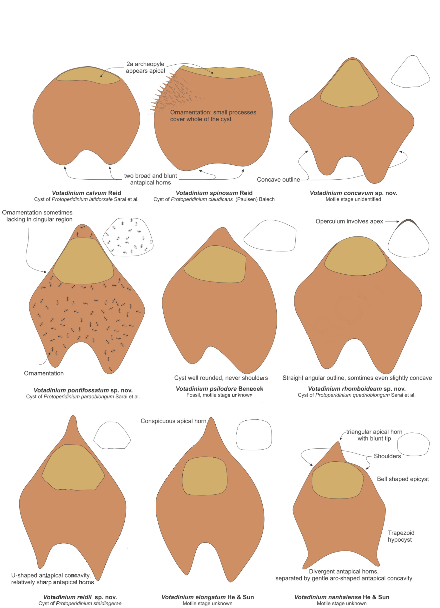

CYSTS LIST
- Alexandrium
- Archaeperidinium/RBSC
- Brigantedinium/Protoperidinium
- Diplopsalopsis/Protoperidinium
- Dubridinium
- Gymnodinium
- Impagidinium
- Lejeunecysta
- Nematosphaeropsis
- Peridinioids
- Polykrikos
- RBSC/Protoperidinium
- Selenopemphix
- Spiniferites
- Stelladinium
- Transparent/Hollow
- Transparent/Solid
- Transparent/Spherical
- Trinovantedinium
- Votadinium
VOTADINIUM
Surface |
Shape |
Remarks |
Species |
Central body (um.) |
Image |
Smooth to microgranularBrown |
Cyst heart-shapedStrongly roundedAntapical horns separated by a shallow depression |
Heart-shapedStrongly rounded |
Votadiniumcalvum | 54 to 72 |
 |
SmoothPale brown |
Concave outlineShallow antapical concavity |
Less rounded outlineMore concave outlineBroad |
Votadiniumconcavum | 65 to 85 |
 |
SmoothSecondary foldsLight brown |
Elongate peridinioidCingular area roundedU-shaped antapical concavity |
Elongate-shapeRounded cingulum |
Votadiniumelongatum | 70 to 77 (L)40 to 49 (W) |
 |
SmoothPale yellow |
Elongate peridinioidAlways with shouldersProminent equatorially |
Very large hexagonal rounded archeopyle |
Votadiniumnanhaiense | 65 to 75.8 (L)49 to 53.5 (W) |
 |
Brown |
PeridinioidElongate antapical hornsDeep-U antapical concavity |
Pontifossate ornamentation |
Votadiniumpontifossatum | 65 to 90 (L)63 to 80 (W) |
 |
Light brown |
PeridinioidLength greater than width |
Dorsal position of saphopylic archeopyle |
Votadiniumpsilodora | 90 to 96 (L)75 to 78 (W) |
 |
BrownSmooth |
Elongante peridinioidStraight edges |
Straight edges |
Votadiniumreidii | 68 to 95 (L)48 to 68 (W) |
 |
BrownSmooth |
Cyst heart-shapedRounded edges |
Covered by spines3 to 7 um. |
Votadiniumspinosum | 49 to 54 |
 |
GRAPHIC DIFFERENCES (VOTADINIUM)

Line drawings of Votadinium species. (Gurdebeke et al., 2019, modified).